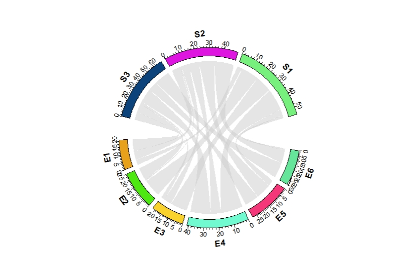
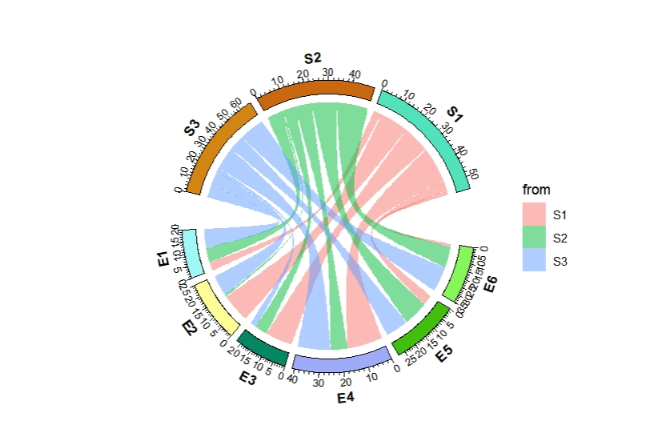
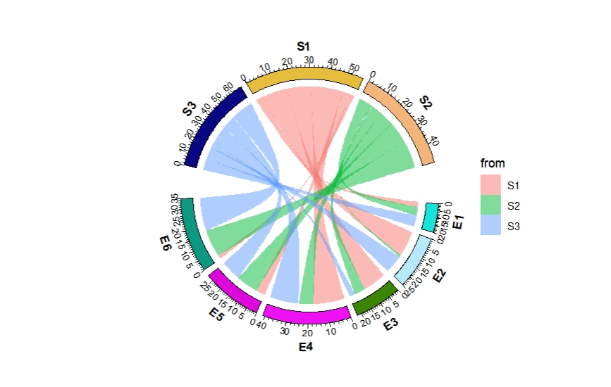
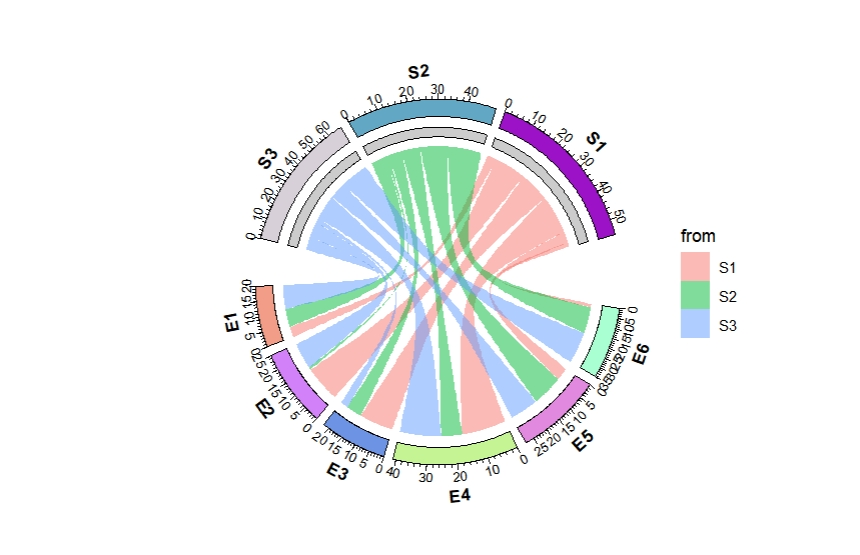
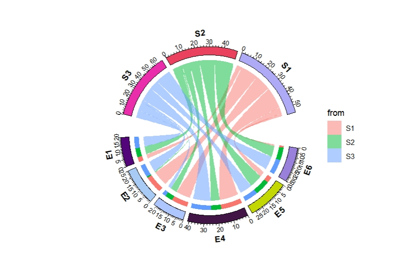
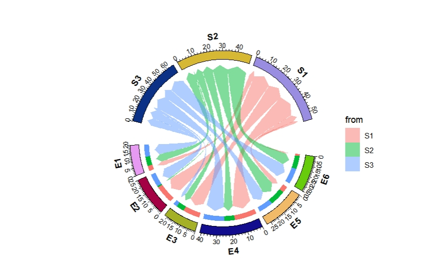
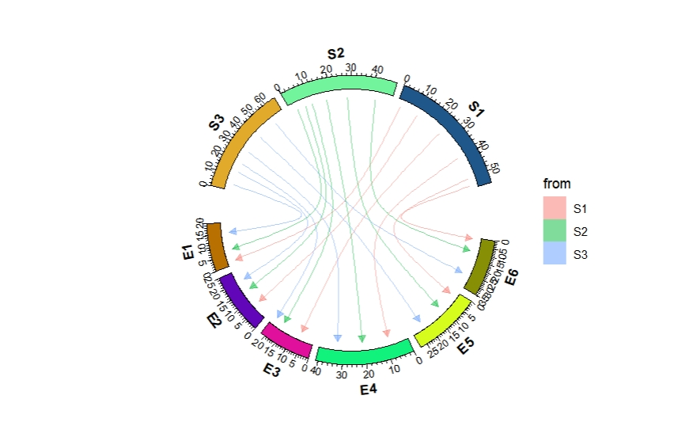
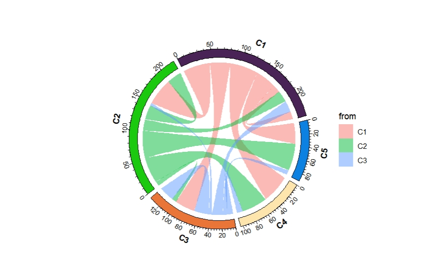
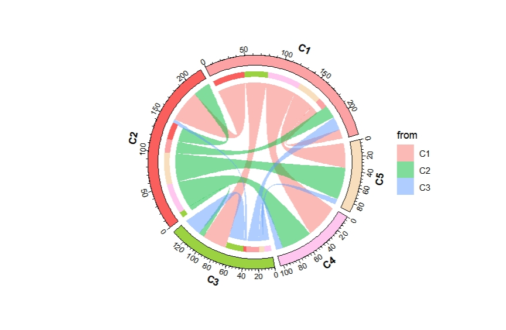
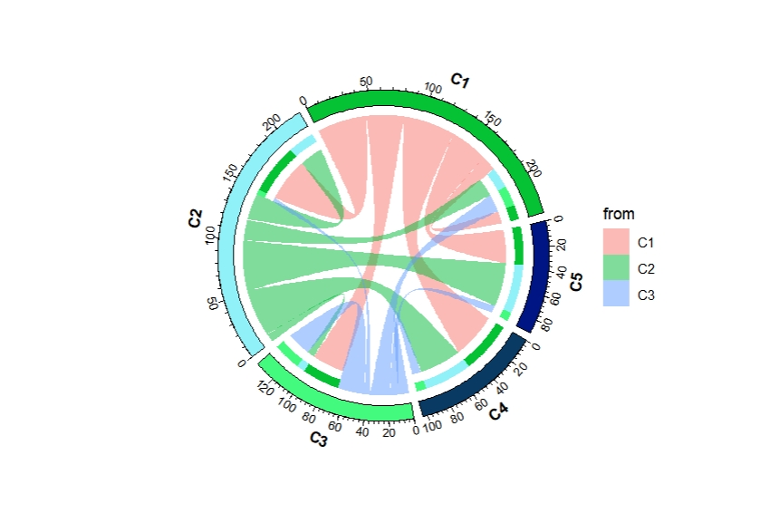

Chapter 6 Geom chordDiagram
geom_chordDiagram is used to make chord diagram to show relations of multiple data.
Parepare data:
library(ggcirclize)
library(ggplot2)
set.seed(999)
mat = matrix(sample(18, 18), 3, 6)
rownames(mat) = paste0("S", 1:3)
colnames(mat) = paste0("E", 1:6)
mat
# E1 E2 E3 E4 E5 E6
# S1 4 14 13 17 5 2
# S2 7 1 6 8 12 15
# S3 9 10 3 16 11 18
df = data.frame(from = rep(rownames(mat), times = ncol(mat)),
to = rep(colnames(mat), each = nrow(mat)),
value = as.vector(mat),
stringsAsFactors = FALSE)
head(df,3)
# from to value
# 1 S1 E1 4
# 2 S2 E1 7
# 3 S3 E1 9
ggcirclize(df,aes(end = 360,r = 0.8,
from = from,to = to,value = value)) +
geom_chordDiagram(aes(fill = from))
Change the orders:
ggcirclize(df,aes(end = 360,r = 0.8,
from = from,to = to,value = value)) +
geom_chordDiagram(aes(fill = from),
sector.order = c("S2","S1","S3",paste0("E",6:1)))
Highlight the from direction:
ggcirclize(df,aes(end = 360,r = 0.8,
from = from,to = to,value = value)) +
geom_chordDiagram(aes(fill = from),
directional = 1)
Highlight the to direction:
ggcirclize(df,aes(end = 360,r = 0.8,
from = from,to = to,value = value)) +
geom_chordDiagram(aes(fill = from),
directional = -1)
Add arrows:
ggcirclize(df,aes(end = 360,r = 0.8,
from = from,to = to,value = value)) +
geom_chordDiagram(aes(fill = from),
directional = -1,
start.arrow = T,end.arrow = T,arrow.len = 0.06)
Add curve lines:
ggcirclize(df,aes(end = 360,r = 0.8,
from = from,to = to,value = value)) +
geom_chordDiagram(aes(color = from,fill = from),
link2line = T,
curve.arrow = arrow(type = "closed",length = unit(0.2,"cm")))
If the names overlap for from and to variable:
set.seed(111)
matx = matrix(sample(seq(1,50,1),15,replace = T), 3)
colnames(matx) <- paste0("C",1:5)
rownames(matx) <- paste0("C",1:3)
matx
# C1 C2 C3 C4 C5
# C1 14 47 35 49 36
# C2 20 25 8 45 47
# C3 19 5 26 10 8
df <- reshape2::melt(matx)
colnames(df) <- c("from","to","value")
# check
head(df,3)
# from to value
# 1 C1 C1 14
# 2 C2 C1 20
# 3 C3 C1 19ggcirclize(df,aes(end = 360,r = 0.8,
from = from,to = to,value = value)) +
geom_chordDiagram(aes(fill = from))
ggcirclize(df,aes(end = 360,r = 0.8,
from = from,to = to,value = value)) +
geom_chordDiagram(aes(fill = from),directional = 1)
ggcirclize(df,aes(end = 360,r = 0.8,
from = from,to = to,value = value)) +
geom_chordDiagram(aes(fill = from),directional = -1)